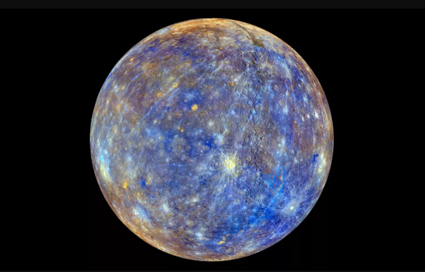

名词解释
水星表面遍布环形山，与月球和其他卫星相似，其地质在数十亿年来都处于非活动状态。水星无四季变化，行星中仅有它与太阳轨道共振。每自转三圈的时间与绕太阳公转两圈的时间几乎相等。从太阳看水星，参照它的自转与公转，每两个水星年才一个太阳日。因此，对一位在水星上的观测者来说，一天相当于两年。
根据水星模型，它可能有一个固体硅酸盐外壳和地幔，覆盖着一个固体外核、一个更深的液体核心层和一个固体内核。水星有相当大的铁核，以体积计算，水星的铁质核心约占总体积的57%。水星有极稀薄的大气-外逸层，由氢、氦、氧、钠、钙、钾、镁、硅和氢氧化物等元素组成。由于几乎没有大气层来保持热量，水星的表面昼夜温差很大，白天表面温度可达427摄氏度，黑夜最低温度可降到-173摄氏度左右。
与金星相同，水星的轨道位于地球的内侧，所以它只能在晨昏之际与白天出现于天空中，而不会在子夜前后出现。从地球看水星的亮度有很大的变化，视星等从-2.48至7.25等，但是它与太阳的距角最大只有28.3°。在北半球，只能在凌晨或黄昏的曙暮光中看见水星。当大距出现于赤道以南的纬度时，在南半球的中纬度可以在完全黑暗的天空中看见水星。
行星是环绕太阳且质量够大的天体。
这类天体：
- 有足够的质量使本身的形状成为球体
- 有能力清空邻近轨道的小天体。
- 不是行星的卫星，或者是非恒星的天体